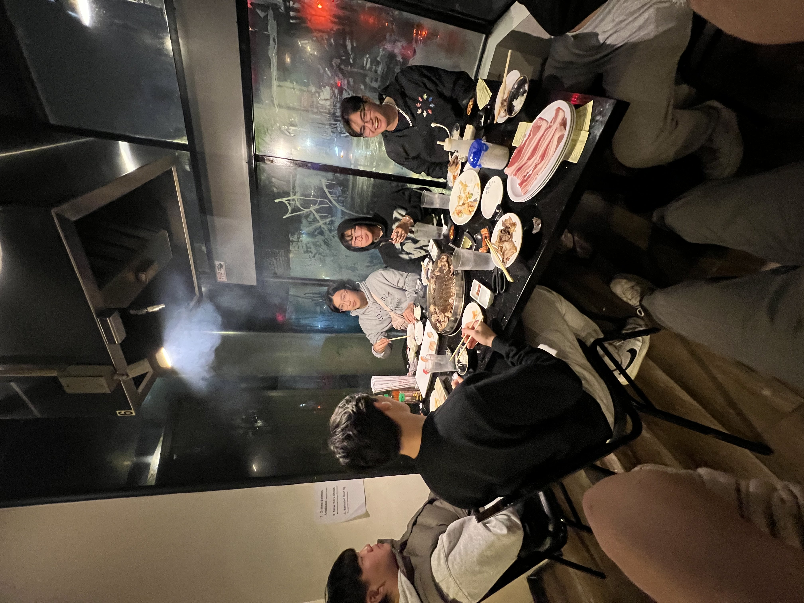
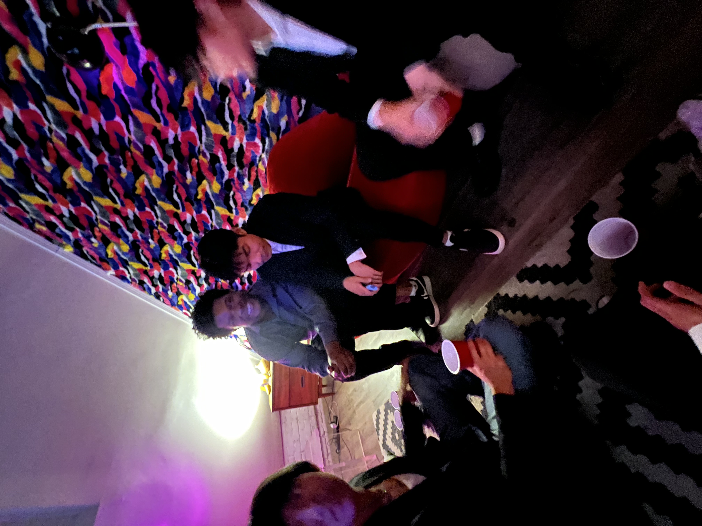

One thing that has been hard to keep up since coming to college has been exercising. During high school, I would either go to the gym or run every day. It helped keep my mental health healthy and kept me in shape. Now that I was no longer on the cross-country team, I had to find a different outlet to stay healthy. Now introducing volleyball open gym. Every Tuesday, Thursday, Friday, and Saturday, I would play volleyball for two hours at the Lyon center. It is a welcoming environment for all with no experience requirement. I met some of the funniest people here at volleyball, especially those who are not within my small bubble of engineering, and it is my little escape from work. I also have gotten better at volleyball as I can now do a jump, top-spin serve, something that I never thought I would be able to do.

Because open-gym volleyball is really a mash of people from all over campus, I was invited to the swimvite last semester by my friend who happens to be the captain of the club swim team. I do not remember much of what happened that night, but it was super hilarious to see a side of them that I do not usually see. One second we were all spectating a friend of ours talk to someone and the next moment we were eating tacos in someone’s kitchen. It was a whirlwind of a night and it has made my college life a college life
